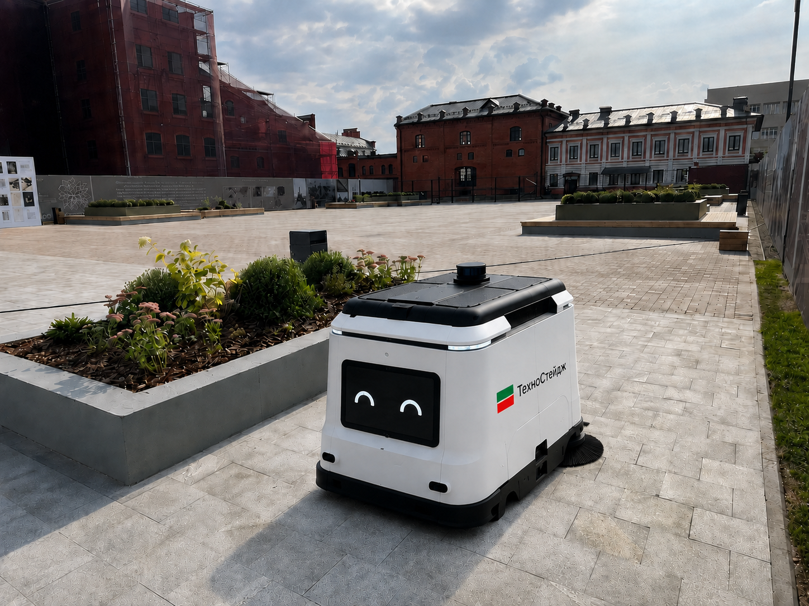
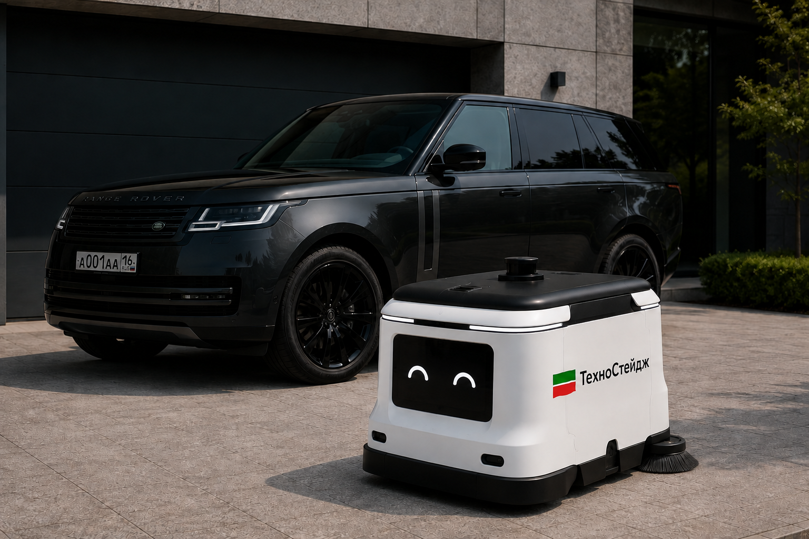
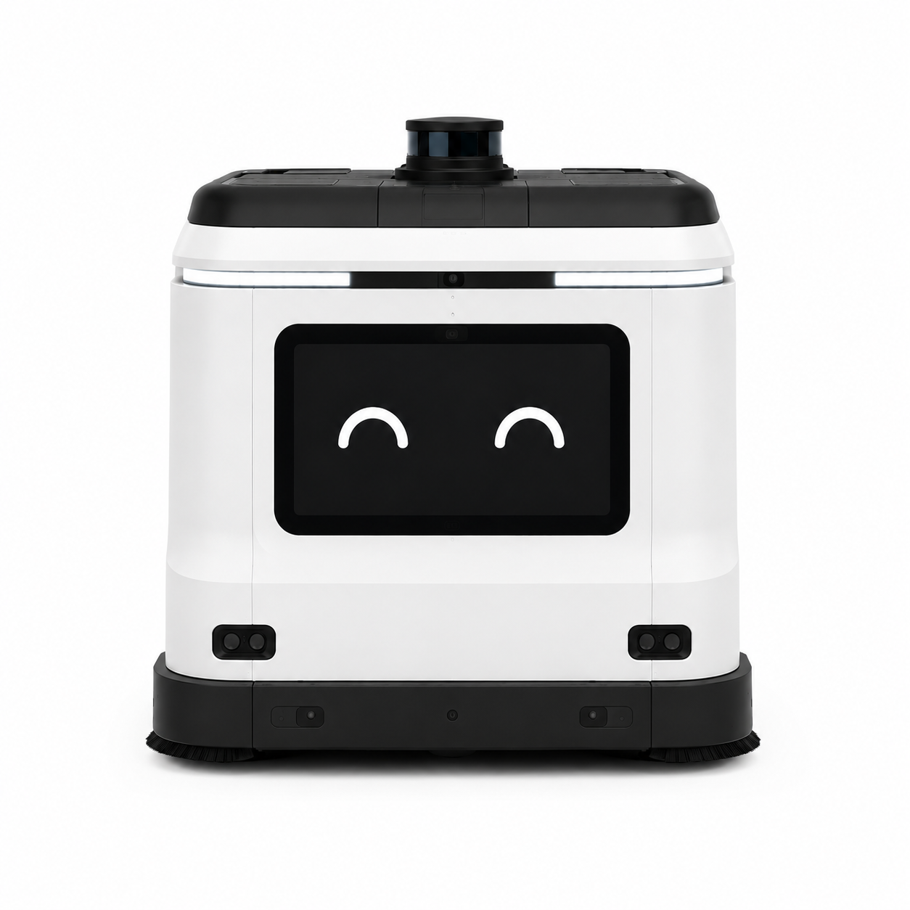
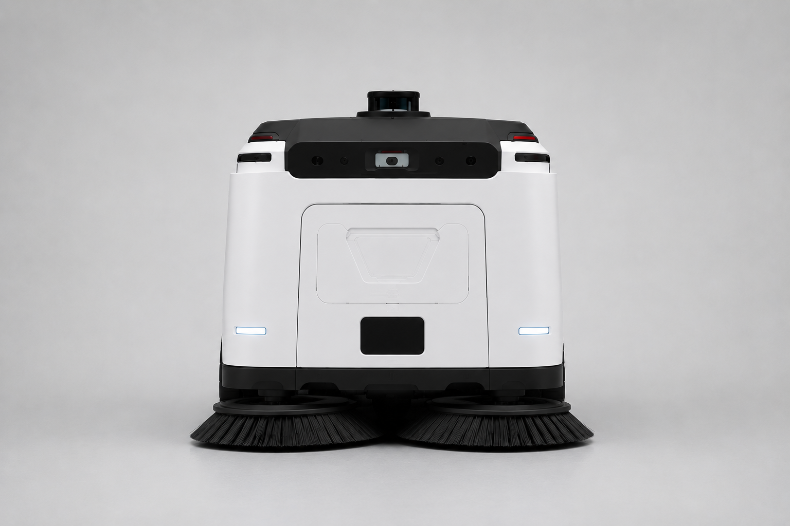

Всасывает листву и мелкий мусор с открытых поверхностей, сзади щётки очищают брусчатку от луж и грязи. Навигация на лидаре и камерах, работает при 0…+50°C без оператора на месте.

Ориентировочные технические характеристики прототипа.
VacoRobot рядом с легковым автомобилем — для наглядного представления габаритов.

Всасывание листвы, чистка брусчатки щётками и работа в любых погодных условиях.
Собирает листву и мелкий мусор с открытых поверхностей в контейнер.
Задние щётки очищают брусчатку от луж и грязи следом за уборкой.
Автоматически строит маршрут вокруг людей, скамеек и других преград.
Диапазон рабочих температур 0…+50°C. Сохраняет работоспособность после дождя, в сырую и ветреную погоду.
Основа навигации — лидар (LiDAR): лазерный дальномер сканирует пространство вокруг робота и строит подробную 3D-карту территории в реальном времени. По этой карте робот точно определяет своё положение и прокладывает маршрут уборки. Камеры компьютерного зрения распознают людей, объекты и границы убираемой зоны, а ультразвуковые и ИК-датчики ближнего действия подстраховывают на случай, если препятствие окажется вне поля зрения лидара и камер.

Робот распознаёт голосовые обращения и по возможности выполняет простые просьбы людей рядом — например, отъезжает, если попросить его уступить дорогу.

Задние щётки меняются без инструментов менее чем за 2 минуты. Комплект насадок подбирается под конкретную задачу — брусчатку, асфальт или сырую листву после дождя.
Веб-панель на подключении к интернету — оператор видит состояние робота и может вмешаться в любой момент, даже не находясь рядом.
Статус и местоположение робота в реальном времени.
Заряд батареи и заполненность контейнера для мусора и листвы.
Маршруты и отчёты по убранной площади за смену и период.
Удалённое управление и остановка робота в реальном времени.
Автономный робот-пылесос для парков, скверов и пешеходных зон.